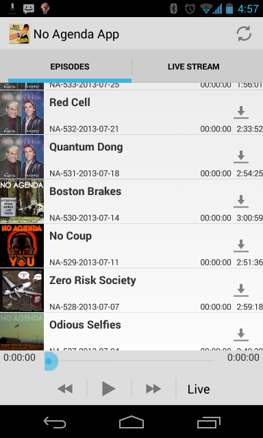

NoAgendaApp:
I began working on this app in late 2012 with the hope of releasing it to the Play store. Development was delayed earlier this year because I switch careers and started Grad school. Due to those two things, I have no hope of finishing this app in the near future. I have decided to release the app and the source code to the community using the BSD License. My hope is that someone else in the community will finish the app or learn from/reuse code. The app works but has some rough UI edges, I have been using it exclusively for the last 9 months to listen to the show.
I am willing to add additional documentation, make small coding tweaks and accept code contributions if others are willing to take on finishing the project.
Working Features:
The Source: https://github.com/noagendaapp/NoAgendaApp
Download the unfinished app: NoAgendaApp v2013.5.9 * Requires Android 4.0 or greater and Unknown sources needs to be enabled *
kevin@k117.us - 9/8/2013